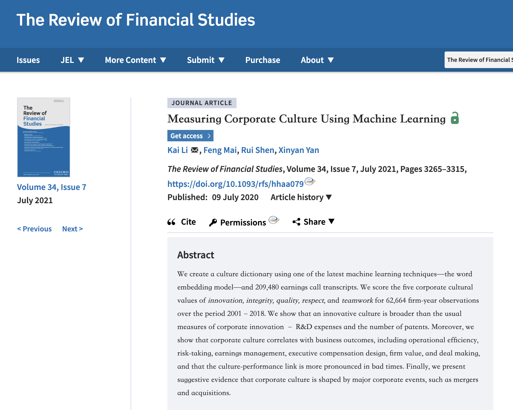
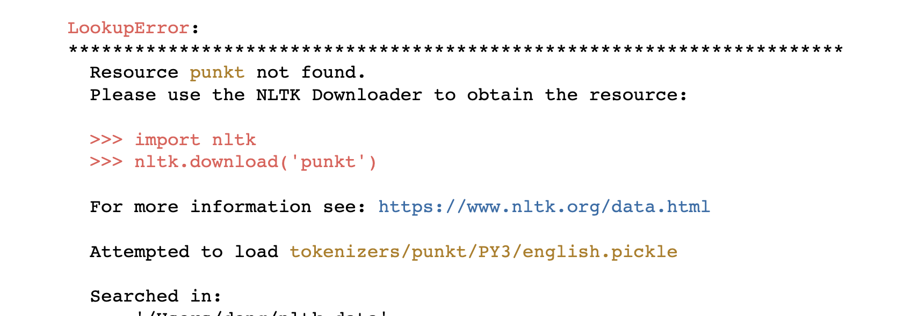
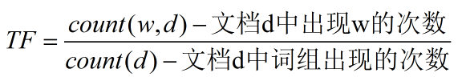
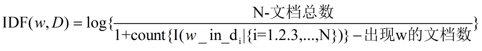
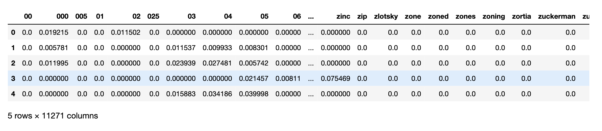
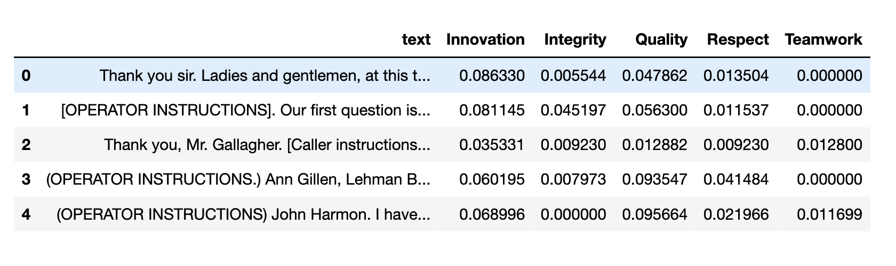

本文作者：大邓
本文标题：使用 Word2Vec 和 TF-IDF 计算五类企业文化
本文链接：/blog/2024-12-31-measure-corporate-culture-using-word2vec/
版权声明：「署名-非商业性使用-相同方式共享 4.0 国际」

Kai Li, Feng Mai, Rui Shen, Xinyan Yan, Measuring Corporate Culture Using Machine Learning , The Review of Financial Studies, 2020
摘要: 我们使用最新的机器学习技术——词嵌入模型 ——和209,480份盈利电话会议记录创建了一本文化词典。我们对2001年至2018年期间的62,664个公司年度观察数据的五个公司文化价值——创新、诚信、质量、尊重和团队合作 进行评分。结果表明，创新文化比公司创新的通常衡量标准——研发支出和专利数量——更广泛。此外，我们还表明，企业文化与业务结果相关，包括运营效率、风险承担、盈利管理、高管薪酬设计、企业价值和交易等，并且文化-绩效联系在困难时期更加显著。最后，我们提供了初步证据，表明企业文化受到重大公司事件（如合并和收购）的影响。
内容概况#
今天分享的内容主要包括两部分， 即
使用word2vec扩展得到五大类企业文化词典
使用TFIDF算法，结合五类文化词典对公司进行评分
算法步骤#
构建种子词； 人工构建五类企业文化的种子词典， 每类词典人工准备5-10个词
word2vec扩充； 使用word2vec扩充五类企业文化词典的词汇量
tf-idf；将文本数据转为tf-idf格式
计算五类企业文化得分； 筛选含有文化词的列，按不同企业文化类别，分别求和得到得分。
一、人工构建种子词典#
词向量法程序会挖掘出原始数据中的所有词的词向量，这时候如果给词向量模型传入种子词，会根据语义空间的距离远近识别出多个近义词。
手工构建了五大类企业文化词典，存放在txt中，即
data/w2v_seeds/innovation.txt
data/w2v_seeds/integrity.txt
data/w2v_seeds/quality.txt
data/w2v_seeds/respect.txt
data/w2v_seeds/teamwork.txt
注意，在txt中，每行一个词语。原始语料
二、 词向量法扩展词典#
论文使用gensim的word2vec算法扩充企业文化词典。但代码太复杂，对初学Python的小白而言，代码的调试难度较大。大邓在这里将代码进行压缩和封装，只需要几行就能原作者几十行才能实现的词向量扩充的功能。需要安装gensim库和cntext库
#安装需要的包
! pip3 install gensim == 4.2.0
! pip3 install cntext -- upgrade

注意，下方代码运行可能会出现nltk_data问题，解决办法参考视频 https://www.bilibili.com/video/BV14A411i7DB/
import cntext as ct
import os
#初始化模型,需要设置lang参数。
model = ct . W2VModels ( cwd = os . getcwd (),
lang = 'english' ) #语料数据 w2v_corpus.txt
#训练词向量模型
model . train ( input_txt_file = 'data/w2v_corpus.txt' )
#根据种子词和训练好的词向量模型，筛选出没类词最相近的前100个词
model . find ( seedword_txt_file = 'data/w2v_seeds/integrity.txt' ,
topn = 100 )
model . find ( seedword_txt_file = 'data/w2v_seeds/innovation.txt' ,
topn = 100 )
model . find ( seedword_txt_file = 'data/w2v_seeds/quality.txt' ,
topn = 100 )
model . find ( seedword_txt_file = 'data/w2v_seeds/respect.txt' ,
topn = 100 )
model . find ( seedword_txt_file = 'data/w2v_seeds/teamwork.txt' ,
topn = 100 )
Step 1/4:...Preprocess corpus ...
Step 2/4:...Train word2vec model
used 42 s
Step 3/4:...Prepare similar candidates for each seed word in the word2vec model...
Step 4/4 Finish! Used 46 s
Step 3/4:...Prepare similar candidates for each seed word in the word2vec model...
Step 4/4 Finish! Used 46 s
Step 3/4:...Prepare similar candidates for each seed word in the word2vec model...
Step 4/4 Finish! Used 46 s
Step 3/4:...Prepare similar candidates for each seed word in the word2vec model...
Step 4/4 Finish! Used 46 s
Step 3/4:...Prepare similar candidates for each seed word in the word2vec model...
Step 4/4 Finish! Used 46 s
三、 使用TF-IDF有权重计算情感词典#
一般的情感分析是无权重算法，即每个词语的权重都是1，只需要统计文本中某类概念词 出现的多寡，就能确定该概念的得分


这篇论文使用的tf-idf， 我们可以将tf简单的理解为某词在文本出现的次数， idf是该词的稀奇程度(少见多怪程度)。一般我们认为一个词语出现的次数越多，信息量越大。但有时候，稀缺性也是一种很重要的信息量。例如以下两类词
A类词，几乎出现在中文所有的句子中，我们可以忽略掉这类词，不影响对句子语义的理解。而B类词很少出现在我们日常文本句子中，但一旦出现，直接影响句子的语义。所以只考虑TF词频的大小还不全面，我们还需要纳入稀缺性信息IDF。
3.1 读入数据#
# 读企业文本数据
import pandas as pd
corporate_df = pd . read_excel ( 'data/corporate_culture.xlsx' )
corporate_df . head ()
Run
idx
text
0
0
Thank you sir. Ladies and gentlemen, at this t...
1
1
[OPERATOR INSTRUCTIONS]. Our first question is...
2
2
Thank you, Mr. Gallagher. [Caller instructions...
3
3
(OPERATOR INSTRUCTIONS.) Ann Gillen, Lehman B...
4
4
(OPERATOR INSTRUCTIONS) John Harmon. I have...
#查看记录数(企业文本数）
len ( corporate_df )
Run
105
3.2 读词典#
word2vec扩展后的企业文化五大类，需要人工检查，剔除不符合词典含义的词，留下可用的词语。这里我们假装已经人工检查过了 。
def read_dict ( file ):
words = open ( file , encoding = 'utf-8' ) . read () . split ( ' \n ' )
words = [ w for w in words if w ]
return words
innovation_words = read_dict ( 'output/w2v_candi_words/innovation.txt' )
integrity_words = read_dict ( 'output/w2v_candi_words/integrity.txt' )
quality_words = read_dict ( 'output/w2v_candi_words/quality.txt' )
respect_words = read_dict ( 'output/w2v_candi_words/respect.txt' )
teamwork_words = read_dict ( 'output/w2v_candi_words/teamwork.txt' )
print ( respect_words )
['respectful', 'talent', 'talented', 'employee', 'dignity', 'empowerment', 'empower', 'skills', 'ibos', 'hr', 'salespeople', 'designers', 'creative', 'organizations', 'dedicated', 'backbone', 'abilities', 'missions', 'engine', 'tools', 'training', 'tackling', 'resource', 'adapting', 'interface', 'selecting', 'functions', 'expertise', 'cryocooler', 'sdk', 'affiliated', 'computers', 'departments', 'awareness', 'logistical', 'in-house', 'associate', 'optimization', 'functioning', 'outsource', 'organized', 'dedicate', 'outbound', 'pride', 'organization', 'referral', 'contacts', 'culture', 'motor', 'coordination', 'financially', 'onsite', 'web-based', 'functionality', 'wholesalers', 'provider', 'telesales', 'professionally', 'dealers', 'managers', 'involves', 'backhaul', 'crm', 'beefing', 'rf', 'computer', 'outreach', 'branding', 'appealing', 'networks', 'knowledge', 'electrical', 'industry-leading', 'providers', 'desires', 'guests', 'managerial', 'enhanced', 'assigned', 'railroad', 'durability', 'individuals', 'co2', 'believes', 'long-standing', 'high-quality', 'third-party', 'systems', 'groups', 'party', 'connecting', 'community', 'complementary', 'practices', 'reputation', 'processes', 'merchandising', 'next-generation', 'bundles', 'refocus', 'infrastructure', 'physician', 'transportation', 'aircraft', 'responsiveness', 'trained', 'full-time']
3.3 生成每条记录的tfidf值#
from sklearn.feature_extraction.text import TfidfVectorizer
def createDTM ( corpus ):
"""构建文档词语矩阵"""
vectorize = TfidfVectorizer ()
#注意fit_transform相当于fit之后又transform。
dtm = vectorize . fit_transform ( corpus )
#vectorize.fit(corpus)
#dtm = vectorize.transform(corpus)
#打印dtm
return pd . DataFrame ( dtm . toarray (),
columns = vectorize . get_feature_names_out ())
corporate_tfidf_df = createDTM ( corporate_df [ 'text' ])
corporate_tfidf_df . head ()

3.4 更新五大类词典#
企业文化词典中的词，并不是都出现在corporate_tfidf_df中的列里， 为避免列操作出错。 需要重新更新文化词典。
Innovation_words = [ w for w in innovation_words if w in corporate_tfidf_df . columns ]
Integrity_words = [ w for w in integrity_words if w in corporate_tfidf_df . columns ]
Quality_words = [ w for w in quality_words if w in corporate_tfidf_df . columns ]
Respect_words = [ w for w in respect_words if w in corporate_tfidf_df . columns ]
Teamwork_words = [ w for w in teamwork_words if w in corporate_tfidf_df . columns ]
3.5 计算不同类别得分#
data = { 'text' : corporate_df [ 'text' ],
'Innovation' : corporate_tfidf_df [ Innovation_words ] . sum ( axis = 1 ),
'Integrity' : corporate_tfidf_df [ Integrity_words ] . sum ( axis = 1 ),
'Quality' : corporate_tfidf_df [ Quality_words ] . sum ( axis = 1 ),
'Respect' : corporate_tfidf_df [ Respect_words ] . sum ( axis = 1 ),
'Teamwork' : corporate_tfidf_df [ Teamwork_words ] . sum ( axis = 1 ),
}
CultureResultDf = pd . DataFrame ( data )
CultureResultDf . head ()

3.6 保存结果#
CultureResultDf . to_csv ( 'output/企业五大类文化tfidf有权重计算.csv' )
点击了解课程详情
本文作者：大邓
本文标题：使用 Word2Vec 和 TF-IDF 计算五类企业文化
本文链接：/blog/2024-12-31-measure-corporate-culture-using-word2vec/
版权声明：「署名-非商业性使用-相同方式共享 4.0 国际」